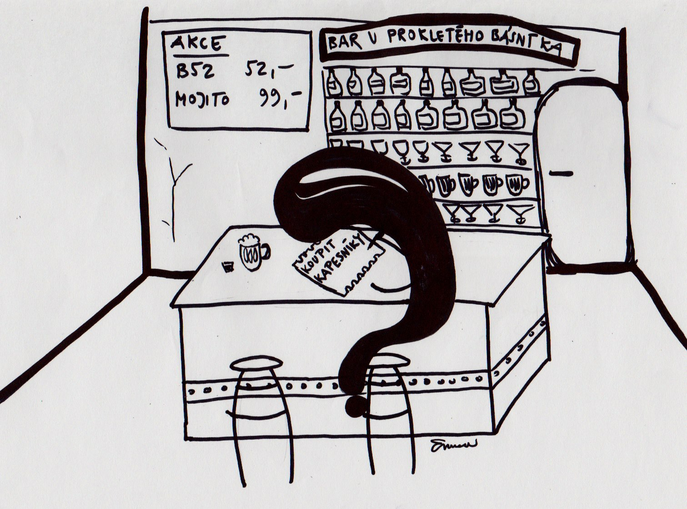

« obálka a tiráž | obsah čísla | následující článek »
V době hluboké normalizace poslouchal jeden mámin známý Karla Kryla. Poslouchal ho na kazetách, které byly bůhví kolikáté kopie z bůhví kolikáté kopie. A jak to tak u pirátských kopií bývá, přebal s fotografií interpreta, názvem alba a dalšími věcmi typickými pro přebal tam nebyl. Mámin známý a jeho vrstevníci tudíž znali Karla Kryla jen podle jeho zvučného hlasu a podle jeho rebelujících písní.
A tak se v jejich hlavách zrodil nový Karel Kryl. Byl to mohutný vlasatec, někdo jako Jaroslav Hutka. Tak v té době logicky vypadal někdo hodně zakázaný.
Jaké pak bylo jejich překvapení, když viděli skutečného Karla Kryla – byl to drobný, ostříhaný pán s knírkem. Civilněji snad už vypadat nemohl. A to je právě to kouzlo neviděného.
Když se vás zeptám: „Jak vypadá básník?“, co se vám vybaví jako první? Někomu se možná vybaví Oscar Wilde na portrétní fotografii, hledící se zamyšleným výrazem ve tváři do levého horního rohu snímku. Někomu se možná vybaví brýlatý intelektuál čtoucí Literární noviny kdesi v literární kavárně. Někomu se vybaví dekandent, který v opiovém doupěti popíjí absinth. Všechny ty představy mají něco do sebe, ale jako celek jsou špatně. Básník1 totiž může vypadat, jak chce. To je to kouzlo neviděného.
Básník napíše báseň, ale právě ve chvíli, kdy vy na baru platíte útratu. Můžete si všimnout, že si něco poznamenal, ale to vám nezaručí, že se rodí báseň. Poznámka může být klidně jen „koupit kapesníky“.
Poslední dobou se mi nějak přemnožily povídky, které se alespoň částečně odehrávají v autobuse. Důvod je prozaický – píšu především tam.
Přemýšlel jsem, kolik z mých spolucestujících si toho všimlo. Ale kolik z nás by napadlo hledat spisovatele zrovna v autobuse? Upřímně řečeno, ani mě ne. A přitom nejsem ani první ani poslední, kdo psal v autobuse nebo ve vlaku.
Jedno z oblíbených tvrzení populární vědy je, že mávnutí motých křídel na Haity rozpoutá hurikán ve střední Evropě. Ačkoliv to může znít přitaženě za vlasy, je to založené na skutečné historce z oboru předpovědi počasí2. Ale nemusíme chodit na Haity, hezká holka v autobuse inspiruje básníka sedícího o tři místa za ní a ani o tom sama neví.
I když nepíšete, přesto ovlivňujete světovou literaturu, a to si pamatujte.
Básník napíše báseň, ale právě ve chvíli, kdy vy na baru platíte útratu. Můžete si všimnout, že si něco poznamenal, ale to vám nezaručí, že se rodí báseň. Poznámka může být klidně jen „koupit kapesníky“.
« obálka a tiráž | obsah čísla | následující článek »
[1] : Básník může být také žena, i když já osobně používám spíše termín básnířka. ↩
[2] : Při vývoji předvídání počasí pomocí počítače totiž někomu „ujela ruka“ při zadávání údajů o tlaku vzduchu. Opakovaná předpověď se tak navzdory použití stejného programu zcela lišila. Výchozí rozdíl tlaku vzduchu odpovídal pravě onomu pomyslnému mávnutí motýlích křídel. (Teď už jistě chápete, proč jsou si meterologové ve svých předpovědích vždy tak jisti.) ↩